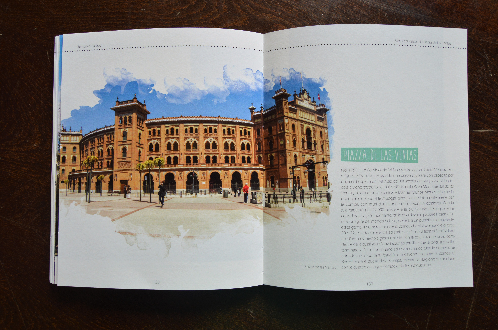
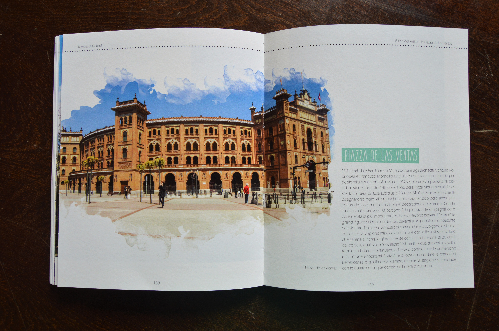

"Giro di Madrid a 360°"

University project of Editorial Design
Accademia di Belle Arti Lecce, Italy
2016
In my end of degree project I have created a tourist guide of the city of Madrid. Designed with Adobe InDesign, my project has a very artistic and fresh style with subtle colors to give more importance to the photos. I have taken the photos myself, and edited with Adobe Photoshop to give them an inspired watercolor effect. Adding prominent designs among the pages in order to give the project a more fun style.
 



2018 ©Elisa Casto-Graphic and editorial designer|All rights reserved.